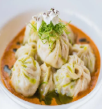
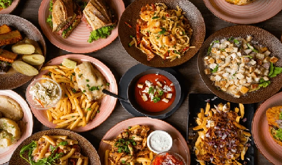

🍽️ The Kitchen Food Corner
Pizza
basmati
dosha
idlie
poha
momos
french-fry

The Heart of Every Home: The Kitchen
👩🍳 Posted by Riya Sharma on Monday, June 18th 2025

All great meals and memories often begin in the kitchen — a place
where flavors meet creativity. Whether you’re a beginner cook or
an experienced chef, the kitchen is your creative playground. In this
post, let’s explore what makes a kitchen functional, joyful, and essential
— and why you should fall in love with your food corner too.
What is the Kitchen Food Corner?
The Kitchen Food Corner
is your go-to place for preparing, experimenting, and enjoying food. It’s
more than just a space; it’s where families gather, meals are prepared
with love, ands taste buds are awakened.
View MDN document for more HTML contents
A well-set kitchen includes:
- Essential tools: pans, knives, spatulas
- Functional zones: cooking area, prep area, storage
- Organized layout for better efficiency
- Kitchens aren't just for cooking — they’re for creating.
Elements of a Good Kitchen Setup : Just like HTML has elements to build
webpages, a kitchen has its core components too. Each plays a vital role
in making your cooking experience smooth and enjoyable:
-
🔪 Prep Station Where chopping, marinating, and measuring happens.
-
🍳 Cooking Zone Includes stove, oven, and sometimes air-fryers or
pressure cookers.
-
🧊 Storage Area Cabinets, drawers, and a refrigerator — all for keeping
ingredients fresh and tools handy.
- 🧼 Cleaning Area Sink, dishwasher, and drying space for hygiene.
-
📋 Recipe or Planning Board A chalkboard, whiteboard, or digital screen
to follow recipes or plan meals.
-
🥘 Why You Should Love Your Kitchen It empowers healthy living through
home-cooked meals